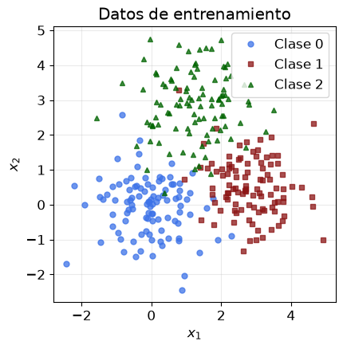
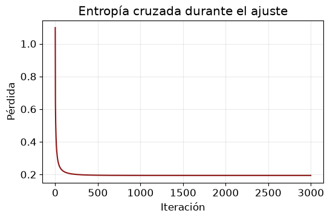
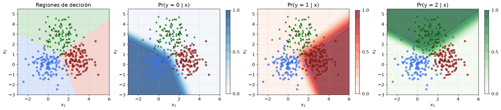
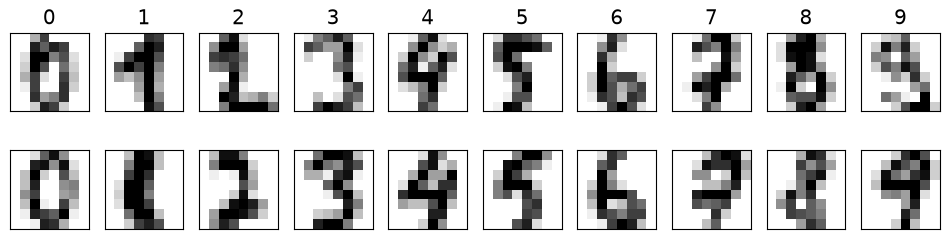
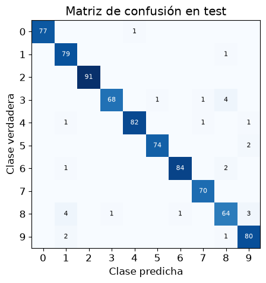
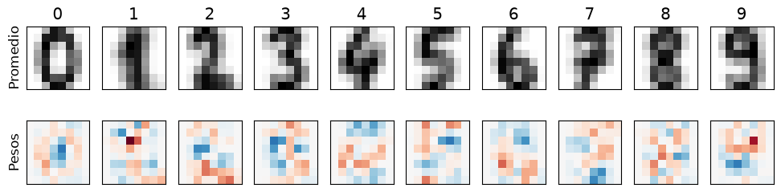

import numpy as np
import matplotlib.pyplot as plt
from matplotlib.colors import ListedColormap
plt.rcParams.update({"figure.figsize": (6, 4.5), "font.size": 12, "axes.grid": True, "grid.alpha": 0.25})
COLORES = ["#3C72E8", "#8C1515", "#006400"]
rng = np.random.default_rng(1)Regresión logística multiclase (softmax) desde cero

Este cuaderno extiende la regresión logística a \(K\) clases con la función softmax, escrita desde cero.
- Generar tres clases en el plano.
- Escribir la softmax, la entropía cruzada y su gradiente, y verificar el gradiente.
- Ajustar por descenso de gradiente y dibujar las regiones de decisión y las probabilidades.
- Aplicar el mismo código a dígitos manuscritos de \(8 \times 8\) píxeles, con penalización L2.
- Repetir el ajuste con PyTorch y verificar con scikit-learn.
Datos
Tres nubes normales en el plano, con 100 puntos de entrenamiento por clase.
CENTROS = np.array([[0.0, 0.0], [3.0, 0.5], [1.2, 2.8]])
def simula(n_por_clase, rng):
y = np.repeat(np.arange(3), n_por_clase)
X = CENTROS[y] + rng.normal(0, 0.9, (len(y), 2))
return X, y
X_tr, y_tr = simula(100, rng)
X_te, y_te = simula(1000, rng)
MARCAS = ["o", "s", "^"]
def dibuja(ax, X, y):
for k in range(3):
ax.plot(*X[y == k].T, MARCAS[k], ms=5, color=COLORES[k], alpha=0.75, label=f"Clase {k}")
ax.set_xlabel("$x_1$"); ax.set_ylabel("$x_2$"); ax.set_aspect("equal")
fig, ax = plt.subplots()
dibuja(ax, X_tr, y_tr); ax.legend(); ax.set_title("Datos de entrenamiento")
plt.show()
La función softmax
El modelo calcula un puntaje por clase, \(z_k = \mathbf{x}^\top\boldsymbol\beta_k\), y los convierte en probabilidades, \[\Pr(y = k \mid \mathbf{x}) = \frac{e^{z_k}}{\sum_{j=1}^{K}e^{z_j}} .\]
Por ejemplo, los puntajes \((2;\ 1;\ 0{,}1)\) dan probabilidades \((0{,}66;\ 0{,}24;\ 0{,}10)\). Sumar la misma constante a todos los puntajes no cambia el resultado, y eso permite restar el máximo antes de exponenciar para evitar desbordes.
def softmax(Z):
Z = Z - Z.max(axis=1, keepdims=True) # estabilidad numérica
E = np.exp(Z)
return E/E.sum(axis=1, keepdims=True)
print(softmax(np.array([[2.0, 1.0, 0.1]])).round(3))
print(softmax(np.array([[1002.0, 1001.0, 1000.1]])).round(3)) # sin restar el máximo daría inf/inf[[0.659 0.242 0.099]]
[[0.659 0.242 0.099]]Entropía cruzada y gradiente
Sea \(\mathbf{Y}\) la codificación one-hot de las etiquetas (\(n \times K\)) y \(\mathbf{B} = [\boldsymbol\beta_1, \ldots, \boldsymbol\beta_K]\) la matriz de coeficientes, con una fila para el intercepto. La pérdida media con penalización L2 (sin los interceptos) y su gradiente son \[\ell(\mathbf{B}) = -\frac{1}{n}\sum_{i=1}^{n}\log P_{i,y_i} + \frac{\lambda}{2}\|\mathbf{B}_{\text{sin intercepto}}\|^2, \qquad \nabla_{\mathbf{B}}\ell = \frac{1}{n}\mathbf{X}^\top(\mathbf{P} - \mathbf{Y}) + \lambda\,\mathbf{B}_{\text{sin intercepto}} .\] El gradiente tiene la misma forma que en el caso binario: predicción menos observación, multiplicada por la entrada.
def con_unos(X):
return np.column_stack([np.ones(len(X)), X])
def one_hot(y, K):
return np.eye(K)[y]
def perdida(B, X, y, lam=0.0):
Z = X @ B; Z = Z - Z.max(axis=1, keepdims=True)
lse = np.log(np.exp(Z).sum(axis=1))
return np.mean(lse - Z[np.arange(len(y)), y]) + 0.5*lam*np.sum(B[1:]**2)
def gradiente(B, X, y, lam=0.0):
G = X.T @ (softmax(X @ B) - one_hot(y, B.shape[1]))/len(y)
G[1:] += lam*B[1:]
return G
A_tr, A_te = con_unos(X_tr), con_unos(X_te)
B_prueba = rng.normal(size=(3, 3)); h = 1e-6
num = np.zeros_like(B_prueba)
for i in range(3):
for j in range(3):
E = np.zeros_like(B_prueba); E[i, j] = h
num[i, j] = (perdida(B_prueba + E, A_tr, y_tr, 0.1) - perdida(B_prueba - E, A_tr, y_tr, 0.1))/(2*h)
print("Máxima diferencia con diferencias finitas:", np.max(np.abs(num - gradiente(B_prueba, A_tr, y_tr, 0.1))))Máxima diferencia con diferencias finitas: 5.984710227391332e-10Descenso de gradiente
def descenso(X, y, K, lam=0.0, eta=0.5, iteraciones=3000):
B = np.zeros((X.shape[1], K)); historia = []
for _ in range(iteraciones):
historia.append(perdida(B, X, y, lam))
B = B - eta*gradiente(B, X, y, lam)
return B, np.array(historia)
LAM = 1e-3
B, hist = descenso(A_tr, y_tr, 3, lam=LAM)
fig, ax = plt.subplots(figsize=(6, 3.5))
ax.plot(hist, color=COLORES[1]); ax.set_xlabel("Iteración"); ax.set_ylabel("Pérdida"); ax.set_title("Entropía cruzada durante el ajuste")
plt.show()
print("Error de entrenamiento:", np.mean((A_tr @ B).argmax(1) != y_tr))
print("Error de test: ", np.mean((A_te @ B).argmax(1) != y_te))
Error de entrenamiento: 0.06
Error de test: 0.09033333333333333Regiones de decisión y probabilidades
Cada punto del plano se asigna a la clase de mayor puntaje. Las fronteras entre dos clases son rectas, porque el logaritmo del cociente de sus probabilidades, \(z_k - z_j\), es lineal en \(\mathbf{x}\).
g1, g2 = np.meshgrid(np.linspace(-3, 6, 300), np.linspace(-3, 5.5, 300))
PG = softmax(con_unos(np.column_stack([g1.ravel(), g2.ravel()])) @ B)
fig, ax = plt.subplots(1, 4, figsize=(19, 4.4), layout="constrained")
ax[0].contourf(g1, g2, PG.argmax(1).reshape(g1.shape), levels=[-0.5, 0.5, 1.5, 2.5],
colors=["#DCE6FA", "#F5D5D0", "#D5EBD5"])
dibuja(ax[0], X_tr, y_tr); ax[0].set_title("Regiones de decisión")
for k, cm in zip(range(3), ["Blues", "Reds", "Greens"]):
cf = ax[k + 1].contourf(g1, g2, PG[:, k].reshape(g1.shape), levels=np.linspace(0, 1, 11), cmap=cm, alpha=0.7)
dibuja(ax[k + 1], X_tr, y_tr); ax[k + 1].set_title(f"Pr(y = {k} | x)")
fig.colorbar(cf, ax=ax[k + 1], fraction=0.046, ticks=[0, 0.5, 1])
plt.show()
Dígitos manuscritos
El conjunto load_digits de scikit-learn tiene 1 797 imágenes de \(8 \times 8\) píxeles con valores de 0 a 16. Cada imagen es un vector de 64 números, y hay diez clases. Se usan 1 000 imágenes para entrenar y el resto para evaluar.
from sklearn.datasets import load_digits
dg = load_digits()
Xd, yd = dg.data/16.0, dg.target
perm = np.random.default_rng(0).permutation(len(yd))
itr, ite = perm[:1000], perm[1000:]
fig, ax = plt.subplots(2, 10, figsize=(12, 2.8))
for k in range(10):
for f in range(2):
ax[f, k].imshow(dg.images[itr[yd[itr] == k][f]], cmap="gray_r", interpolation="nearest")
ax[f, k].set_xticks([]); ax[f, k].set_yticks([]); ax[f, k].grid(False)
ax[0, k].set_title(str(k))
plt.show()
El mismo código de descenso de gradiente ajusta los \(65 \times 10 = 650\) coeficientes. Con \(\lambda\) pequeño la pérdida es casi plana en algunas direcciones, y el descenso de gradiente necesita muchas iteraciones para llegar al mínimo. Aquí se usan 20 000 pasos con \(\eta = 4\), unos dos segundos.
Ad_tr, Ad_te = con_unos(Xd[itr]), con_unos(Xd[ite])
LAM_D = 1e-3
Bd, hist_d = descenso(Ad_tr, yd[itr], 10, lam=LAM_D, eta=4.0, iteraciones=20000)
pred = (Ad_te @ Bd).argmax(1)
print("Error de test en los dígitos:", np.mean(pred != yd[ite]))
C = np.zeros((10, 10), int)
for t, p in zip(yd[ite], pred):
C[t, p] += 1
fig, ax = plt.subplots(figsize=(5.5, 5))
ax.imshow(C, cmap="Blues")
for i in range(10):
for j in range(10):
if C[i, j]:
ax.text(j, i, C[i, j], ha="center", va="center", fontsize=8, color="w" if C[i, j] > 40 else "k")
ax.set_xticks(range(10)); ax.set_yticks(range(10)); ax.grid(False)
ax.set_xlabel("Clase predicha"); ax.set_ylabel("Clase verdadera"); ax.set_title("Matriz de confusión en test")
plt.show()Error de test en los dígitos: 0.03513174404015056
Los pesos de cada clase se pueden ver como imágenes. Un píxel rojo aumenta el puntaje de la clase cuando tiene tinta, y uno azul lo disminuye. Los pesos marcan los píxeles que distinguen una clase de las demás, y por eso no se parecen al dígito promedio.
fig, ax = plt.subplots(2, 10, figsize=(12, 2.8))
m = np.abs(Bd[1:]).max()
for k in range(10):
ax[0, k].imshow(Xd[itr][yd[itr] == k].mean(0).reshape(8, 8), cmap="gray_r", interpolation="nearest")
ax[1, k].imshow(Bd[1:, k].reshape(8, 8), cmap="RdBu_r", vmin=-m, vmax=m, interpolation="nearest")
for f in range(2):
ax[f, k].set_xticks([]); ax[f, k].set_yticks([]); ax[f, k].grid(False)
ax[0, k].set_title(str(k))
ax[0, 0].set_ylabel("Promedio"); ax[1, 0].set_ylabel("Pesos")
plt.show()
El mismo modelo en PyTorch
Una capa lineal de 64 entradas y 10 salidas produce los puntajes, y CrossEntropyLoss aplica la softmax y la entropía cruzada en un solo paso estable. La penalización L2 se agrega a mano para no penalizar los interceptos.
import torch
Xt = torch.tensor(Xd[itr], dtype=torch.float64); yt = torch.tensor(yd[itr])
capa = torch.nn.Linear(64, 10).double()
torch.nn.init.zeros_(capa.weight); torch.nn.init.zeros_(capa.bias)
opt = torch.optim.LBFGS(capa.parameters(), lr=1, max_iter=500, tolerance_grad=1e-10, tolerance_change=1e-14,
line_search_fn="strong_wolfe")
ce = torch.nn.CrossEntropyLoss()
def cierre():
opt.zero_grad()
l = ce(capa(Xt), yt) + 0.5*LAM_D*(capa.weight**2).sum()
l.backward()
return l
opt.step(cierre)
pred_t = capa(torch.tensor(Xd[ite], dtype=torch.float64)).argmax(1).numpy()
print("Error de test con PyTorch:", np.mean(pred_t != yd[ite]))Error de test con PyTorch: 0.03513174404015056Verificación con scikit-learn
scikit-learn minimiza \(C\sum_i \text{pérdida}_i + \frac{1}{2}\|\mathbf{B}\|^2\) sin penalizar los interceptos. Dividiendo por \(Cn\) se obtiene la pérdida media con \(\lambda = 1/(Cn)\), de modo que \(C = 1/(n\lambda)\) reproduce el modelo de arriba. Con más clases que dos ajusta por defecto el modelo multinomial.
from sklearn.linear_model import LogisticRegression
sk = LogisticRegression(C=1/(len(itr)*LAM_D), tol=1e-10, max_iter=20000).fit(Xd[itr], yd[itr])
P_sk = sk.predict_proba(Xd[ite]); P_gd = softmax(Ad_te @ Bd)
print("Error de test con scikit-learn:", np.mean(sk.predict(Xd[ite]) != yd[ite]))
print("Máxima diferencia en las probabilidades (descenso de gradiente frente a scikit-learn):", np.abs(P_sk - P_gd).max())Error de test con scikit-learn: 0.03513174404015056
Máxima diferencia en las probabilidades (descenso de gradiente frente a scikit-learn): 9.227241878906334e-07Ejercicios
- Verifique que con \(K = 2\) la regresión softmax da las mismas probabilidades que la regresión logística binaria. ¿Qué relación hay entre \(\boldsymbol\beta_1 - \boldsymbol\beta_0\) y el coeficiente binario?
- Elija \(\lambda\) para los dígitos por validación cruzada de cinco pliegues, con valores entre \(10^{-5}\) y \(10^{-1}\).
- Ajuste diez regresiones binarias, una por clase contra el resto, y compare su error y sus probabilidades con la regresión softmax.